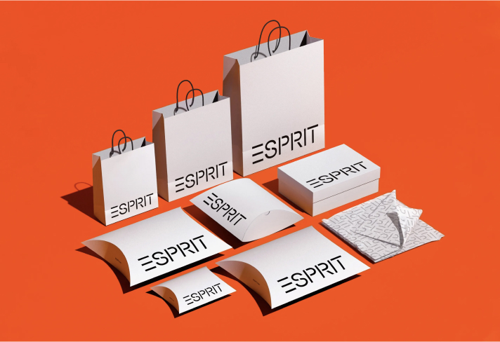
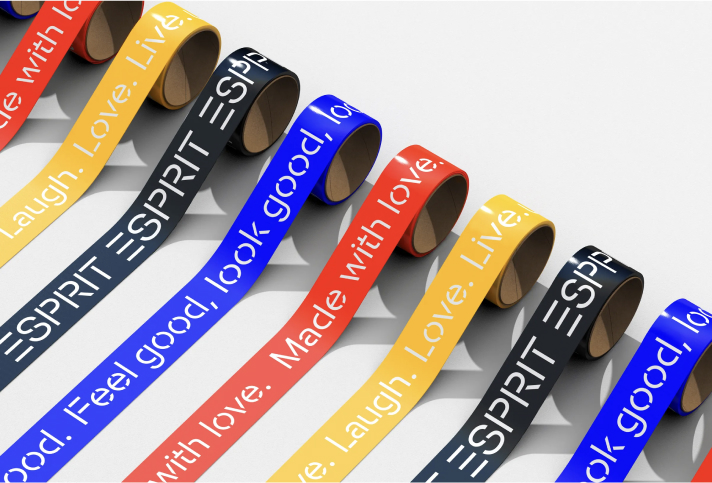
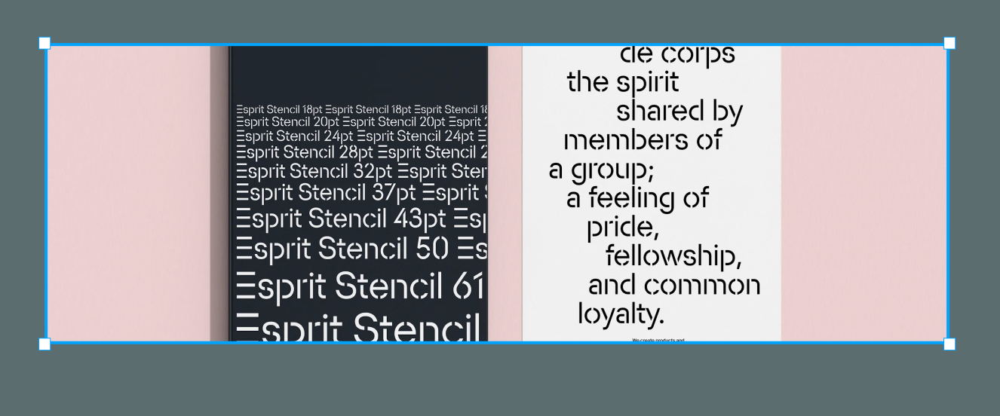
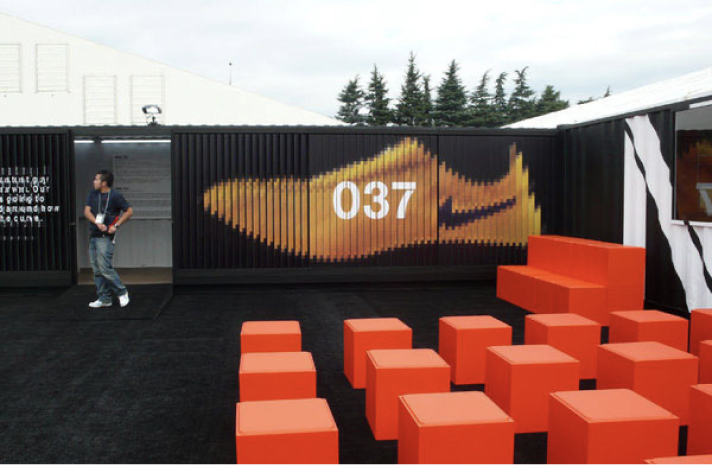
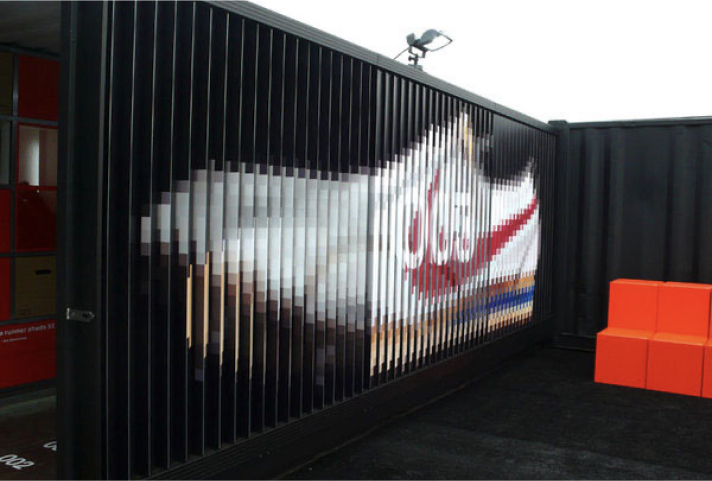
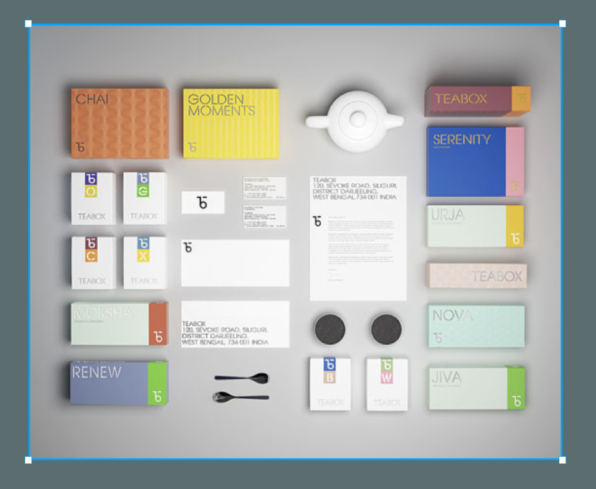
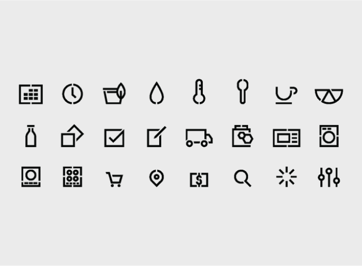
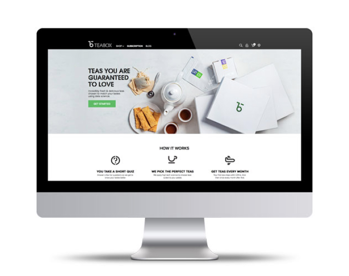
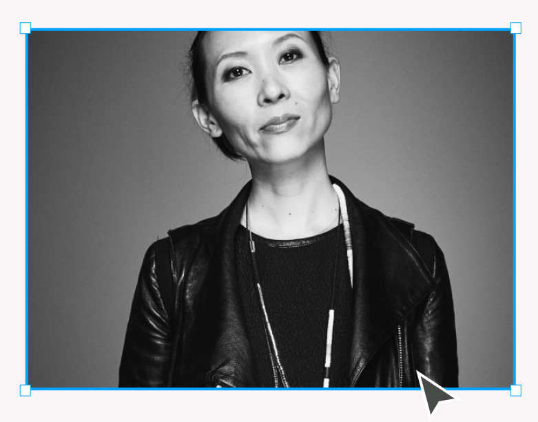
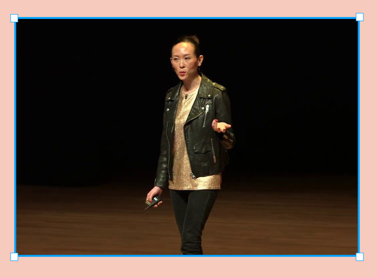

In the words of 2014 Wired magazine, Natasha Jen is a leader in her field (Vanhemert, 2015). Undeniably Jen is an anomaly. Receiving an invitation to become a partner in the renowned design group ‘Pentagram’ at 34 gave Jen the platform to build on a pre-existing highly diverse, innovative and highly exciting multi-genre design portfolio to produce works that have raised the bar for graphic designers globally. Jen’s determination and work ethic was the catalyst which launched her into this position at a notably young age.
The Beginning
Newly graduated from the Visual School of Design, after choosing a major in graphic design it was clear that Jen had a clear goal and determination to go far. However, a hyper-focused ambition did not equate to a specialised portfolio. The words ‘Natasha Jen’ and ‘multi-disciplinary’ are synonymous in the design world. Her work spans graphic design, architecture, exhibit spaces and product design. Her earlier positions in various multidisciplinary design studios, such as ‘Base’, undoubtedly exposed her to such practices and enriched her desire to explore various paths of design principles and ways of creating.
Defining Works
“As you know, some projects turn out better than others, some projects fail. It took four or five years for me to feel more comfortable about the body of work that I had created during my time at Pentagram.” (Hemingway, 2022)
Natasha Jen has gathered a rather impressive clientele through partnering with brands such as Nike, Chanel and the Guggenheim. Her rebrands are known to be innovative and have massive impacts on the metrics of businesses. Her rebrand with the fashion company ‘Esprite’ is one example. The branding of 1968 and its various updates still felt outdated in perhaps an oversaturated and constantly evolving market. Jen describes the rebrand as carefully considering its legacy and era of emergence without taking a contrived ‘retro’ approach. (Brewer, 2020)
 Jen retained the idea of the original stencil-inspired typeface of John Casado created in the 80s. However, in the rebranded design system Jen created a full typeface including lowercase letters, numbers and glyphs— a new step for the brand. This was continued into the logotype and throughout the entirety of the branding. It is a rebrand with extensive consideration for every step that the consumer would interact with the brand and its products with a design of boxes, tapes, labels, price tags, packaging accessories and envelopes (to name a few).
Her design-based installation for Nike is another example of her adaptability to brands and elevating them. It is an inspiring example of how making bold statements in branding is crucial. This installation of an adaptation of Nike 100+8 for Tokyo Design Week, shows remarkable lateral thinking, creating a wall art that shifts between two shoe styles depending on the perspective of the viewer. A radical approach to a billboard marketing style.
 The breadth of Jen’s clientele is remarkable. Jen’s dedication to each project is evident, for brands both well-known and brands that are lesser household names. Her work with the tea brand ‘Tea Box’ is without doubt a fully realised and extensive example of branding. Whilst the standard for many foodstuffs branding is typically limited to packaging and marketing, a thorough presentation of brand experience is evident in this project. The visual language used throughout this branding is highly contemporary and sophisticated.
A glance at competitor brands in a tea aisle of a grocery store would identify this branding as a standout within the market due to its branding. The strong, minimalist logo is a timeless one. It is representative of the steeping methods of tea and reminiscent of the importance of time and temperature in its practice. It is truly adaptable to all aspects of the stationery and marketing designed by Jen for this brand. The design system included everything from business cards, envelopes, and letters to teapots and teaspoons. The packaging holding the product itself pertains to the sophistication of the entire branding. A simple colour system is used to define products with ease. This branding is designed for the ‘tea-nerd’ perhaps— someone who enjoys the brand experience as much as the product itself.
A language of icons was also created within the design system, furthering this uniqueness of the branding. This was used extensively in the website created by Jen and her team to consider the marketing aspects of this project. This website is also used for e-commerce, another adroit consideration for this brand. This is Jen’s true mastery exemplified. No project is lacking or sparse. True consideration for the consumer or user contributes to highly successful and unique outcomes in all of her projects.
 Identifying Obstacles
“I think there’s no chronology to gender discrimination or any sort of discrimination, meaning that discrimination or inequality is omnipresent” (Radić, 2017)
Natasha Jen makes it clear that her creative output and what she brings to the table are the definition of her success. She seems to separate herself from her marginalised roots and a narrative that because of her ethnicity or gender her work should be viewed in a different light. Yet, it would be remiss to ignore the giant leaps and bounds she has made in a highly white male-dominated industry. This undoubtedly proved as an obstacle during the early stages of her career.
Scholars have identified gender inequality in design firms residing in the more senior roles. Maher comments “70 per cent of graduates are women but 11 per cent of creative directors are female” (Hilder, 2022) . This perhaps is a systemic issue that echoes from early education. A study conducted by Growney in 1996 identified that 80% of girls said their parents did not approve of design and technology as important for their daughters to learn, while a significantly lower 41% of boys said that their parents did not deem the subject important (Growney, 1996). Regrettably, racism is also ‘omnipresent’ as Jen comments, in the industry. The 2019 design census created by Google and AIGA presented us with the sobering statistic that only 3% of the US design industry was made up of black men and women. (C. Martin, 2020) The intersectionality of discrimination that Jen faces as a result of this is staggering. Yet, her determination to succeed in the face of this is truly inspiring to both designers and young people looking towards a career in the industry. Her attitude surrounding her barriers is equally as admirable: “I would say that the most important thing is to have the dream and the ambition.” (Radić, 2017)
Looking Inwards
Having been on a constant trajectory of success for many years, when the pandemic forced us all to stay at home, Jen and her colleagues in Pentagram found themselves assessing their design practice and career thus far as a designer in a way they had never before. “As agencies, we don’t talk about the work itself. I want to actually understand our work” says Jen considering her extensive portfolio created in a pre-pandemic world (Link, 2021). She explored internal design questions of what makes her work her own when designing for a brief set by a client. Linh at SVA design research commented she finally ‘found time to meander’. Throughout Jen’s career, she has often paid careful consideration to her design ethos.
Jen sent shockwaves through the industry after her talk ‘Design Thinking is Bullsh*t”. Jen insists that she cannot comprehend its components, the more she assess it, the more ridiculous it seems. To her, it seems reductive. (Dawood, 2018) One cannot compartmentalise such a complex experience, so innate to each designer, into a simple step-by-step guide. Jen also has qualms about a key component that is missing - design critique. How else can a team design a product fit for purpose with ignorance of its shortcomings? Rather comically, she jibes at the industry's dependence on sticky notes. Jen argues that by using a tiny square to record ideas, you are boxing in and reducing your ideas before you put pen to paper. Brainstorming is messy and eclectic in Jen’s world. It is multi-media and organic. It often takes the form of a messy office teeming with aspects of inspiration. Design boot camps are also causing Jen concern. To her, these courses encourage designers to run before they can walk. There is no shortcut to excellence in her eyes.
These unabashed views have the grounding of years of experience and success. Jen truly is an anomaly in the design world. The fearlessness and vigour in Jen's portfolio and design processes is captivating. It will be truly exciting to track the rest of Jen’s career in a post-pandemic world. It is now a question of how much further will Jen push the boundaries. What avenues of design will she explore next? “You’ve got to have that vision and desire in your gut that will propel you to take action, to make your dream happen. And then you need to have the commitment and stamina to push towards that dream.” (Radić, 2017) At what point is Jen’s dream realised? Having achieved heights most designers can only dream of in such a short space of time, finding new inspiration will be key to further already unimaginable success.
REFERENCES
1. Radić, Ivona. (2017) Natasha Jen: Having that genuine passion and being able to play are the drivers of originality. Media Marketing. Available at: https://www.media-marketing.com/en/interview/natasha-jen-having-that-genuine-passion-and-being-able-to-play-are-the-drivers-of-originality/ (Accessed: 3rd December 2022)
2. Vanhemert, Kyle. (2015) 9 of the World's Leading Designers Talk About What Matters Now. Wired Magazine. Available at: https://www.wired.com/2015/01/what-matters-to-the-worlds-most-important-designers/ (Accessed: 3rd December 2022)
3. Hemmingway, Mary. (2022) Natasha Jen. Design by Women. Available at: https://designby-women.com/natasha-jen/ (Accessed: 4th December 2022)
4. Brewer, Jenny. (2020) Pentagram’s Natasha Jen rebrands Esprit, turning its logo into a stencil typeface. It’s Nice That. Available at: https://www.itsnicethat.com/news/pentagram-natasha-jen-esprit-rebrand-graphic-design-300420 (Accessed: 4th December 2022)
5. Petzold, Dirk. (2021) Teabox Brand and Packaging Design by Natasha Jen. We and the Color. Available at: https://weandthecolor.com/teabox-brand-packaging-design-natasha-jen/82294 (Accessed: 28th December 2022)
6. Hilder, Rosie. (2022) Design's gender problem, and what you can do about it. Creative Bloq. Available at: https://www.creativebloq.com/features/join-the-fight-for-gender-equality-in-design (Accessed: 28th December 2022)
7. Growney, Cathy. (1996) Gender inequality in design and technology ... the pupils’ perspective. Loughborough’s Institutional Repository. Available at: https://core.ac.uk/download/pdf/288392524.pdf (Accessed: 28th December 2022)
8. C. Martin, Bobby. (2020) The Black Experience in Graphic Design: 1968 and 2020. Letterform Archive. Available at: https://letterformarchive.org/news/view/the-black-experience-in-graphic-design-1968-and-2020 (Accessed: 28th December 2022)
9. Linh, Emma. (2021) Natasha Jen Has 2020 Vision. School of Visual Arts. Available at: https://medium.com/still-processing-work-from-the-2021-design-writing/natasha-jen-has-2020-vision-9f560f16d1fe (Accessed: 28th December 2022)
10. Dawood, Sarah (2018) Pentagram’s Natasha Jen: “Design is not a monster you ‘unleash’ to fix the world”. Design Week. Available at: https://www.designweek.co.uk/issues/5-11-march-2018/pentagrams-natasha-jen-design-monster-unleash-fix-world/ (Accessed: 28th December 2022)